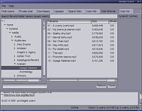

Nicotine
Dieser Artikel wurde für die folgenden Ubuntu-Versionen getestet:
Ubuntu 14.04 Trusty Tahr
Zum Verständnis dieses Artikels sind folgende Seiten hilfreich:
Nicotine+  ist ein auf Python basierender, plattformübergreifender Soulseek-Client und eine Abspaltung (Fork) des Vorgängers Nicotine, der wiederum auf PySoulSeek beruhte. Eine Übersicht der Fähigkeiten der verschiedenen SoulSeek-Clienten liefert diese Tabelle .
ist ein auf Python basierender, plattformübergreifender Soulseek-Client und eine Abspaltung (Fork) des Vorgängers Nicotine, der wiederum auf PySoulSeek beruhte. Eine Übersicht der Fähigkeiten der verschiedenen SoulSeek-Clienten liefert diese Tabelle .
Installation¶

Nicotine+ ist den offiziellen Paketquellen enthalten. Folgendes Paket muss installiert [1] werden:
nicotine (universe)
 mit apturl
mit apturl
Paketliste zum Kopieren:
sudo apt-get install nicotine
sudo aptitude install nicotine
PPA¶
Die aktuelle Version von Nicotine+ für Ubuntu 16.04 oder neuer kann über ein "Personal Packages Archiv" (PPA) [2] installiert werden.
Adresszeile zum Hinzufügen des PPAs:
ppa:kip/nicotine+
Hinweis!
Zusätzliche Fremdquellen können das System gefährden.
Ein PPA unterstützt nicht zwangsläufig alle Ubuntu-Versionen. Weitere Informationen sind der  PPA-Beschreibung des Eigentümers/Teams kip zu entnehmen.
PPA-Beschreibung des Eigentümers/Teams kip zu entnehmen.
Damit Pakete aus dem PPA genutzt werden können, müssen die Paketquellen neu eingelesen werden.
Nach dem Aktualisieren der Paketquellen erfolgt die Installation wie oben angegeben.
Verwendung¶

Nach der Installation kann man Nicotine+ bei Ubuntu-Varianten mit einem Anwendungsmenü über "Internet -> Nicotine-Plus" oder durch den Befehl nicotine starten [3].
Zu Sinn und Zweck von SoulSeek und Nicotine+ sei auf die Links verwiesen.
- Erstellt mit Inyoka
-
 2004 – 2017 ubuntuusers.de • Einige Rechte vorbehalten
2004 – 2017 ubuntuusers.de • Einige Rechte vorbehalten
Lizenz • Kontakt • Datenschutz • Impressum • Serverstatus -
Serverhousing gespendet von